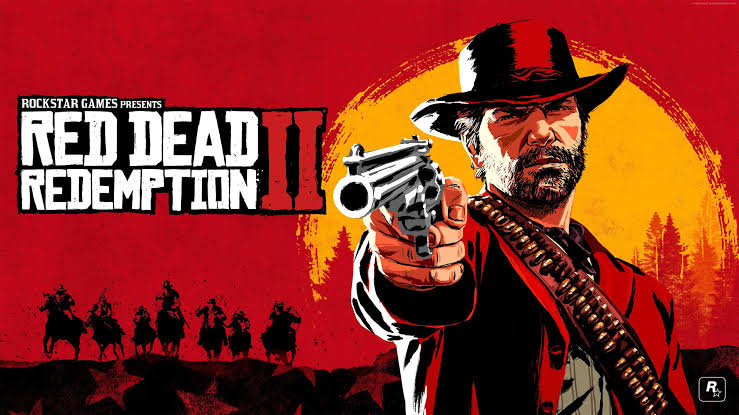
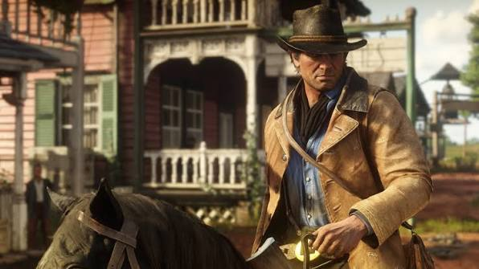
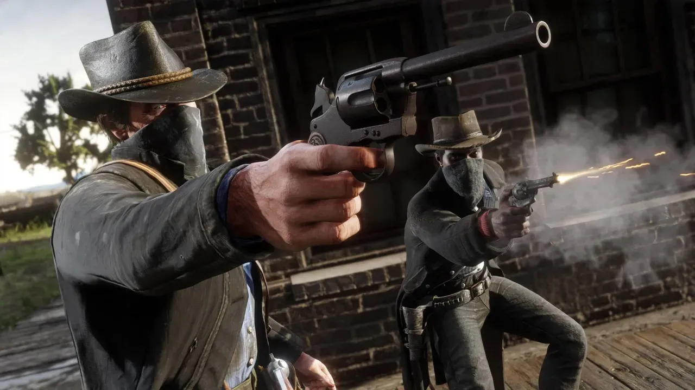
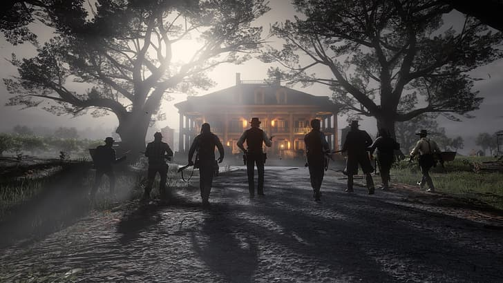

Red Dead Redemption 2 (RDR2), lançado em 2018 pela Rockstar Games, é amplamente considerado uma das maiores obras-primas da história dos videogames. Trata-se de um jogo de ação e aventura em mundo aberto ambientado no ano de 1899, nos Estados Unidos, retratando o fim da era do Velho Oeste e o avanço irrestrito da modernização e da lei.

O jogo funciona como uma prequela do primeiro Red Dead Redemption (2010). Em vez de controlar John Marston, o jogador assume o papel de Arthur Morgan, o braço direito de Dutch van der Linde — líder de uma famosa gangue de fora da lei.
A narrativa começa imediatamente após um assalto em grande escala na cidade de Blackwater dar terrivelmente errado. Em fuga com toda a gangue, Dutch e Arthur tentam acumular dinheiro suficiente para comprar terras longe do alcance das autoridades, enquanto são caçados por agentes federais (a Agência de Detetives Pinkerton) e por caçadores de recompensas.
O enredo explora temas profundos:
° Morte do Velho Oeste: O confronto entre o estilo de vida livre/selvagem e a chegada da industrialização, das grandes cidades e do governo centralizado.
° Lealdade vs. Razão: O conflito interno de Arthur entre sua devoção cega a Dutch — uma figura paterna — e a percepção gradual de que a visão do líder está se tornando paranoia e loucura.
° Redenção: A jornada pessoal de Arthur para fazer o bem e acertar suas contas com o mundo à medida que encara as consequências de suas escolhas de vida.

O mundo de RDR2 é enorme e possui cidades, montanhas, florestas, desertos, rios e pântanos. O jogador pode seguir a história principal ou simplesmente explorar o mapa, caçar animais, pescar, procurar tesouros, jogar pôquer, ajudar desconhecidos, participar de eventos aleatórios e descobrir lugares secretos. Os cavalos são fundamentais para viajar, e é possível comprar, roubar ou domar diferentes raças, criar vínculo com eles e cuidar de sua alimentação e aparência. Arthur também possui diversas armas, como revólveres, rifles, espingardas e arcos. O sistema Dead Eye permite desacelerar o tempo durante os tiroteios e realizar disparos precisos.

As decisões do jogador influenciam a honra de Arthur. Ajudar pessoas, poupar inimigos e realizar boas ações aumenta sua honra, enquanto crimes e violência contra inocentes diminuem. O jogo também possui muitos sistemas de realismo: a barba e o cabelo de Arthur crescem, suas roupas ficam sujas, as armas precisam ser cuidadas, o clima afeta o personagem e os animais possuem comportamentos diferentes. Os NPCs também possuem rotinas e podem reagir às atitudes de Arthur. Esses detalhes fazem o mundo parecer muito mais vivo do que um simples cenário de fundo.

depois de descobrir que está com tuberculose, Arthur começa a repensar sua vida e tenta garantir que John Marston e sua família consigam escapar da vida criminosa. Arthur acaba morrendo, mas consegue sua redenção ao ajudar John. O jogo então continua com John como protagonista durante o epílogo, mostrando sua tentativa de construir uma vida normal. Isso conecta diretamente RDR2 ao primeiro Red Dead Redemption, já que RDR2 acontece antes dele e explica a origem da história de John, Dutch e da antiga gangue.